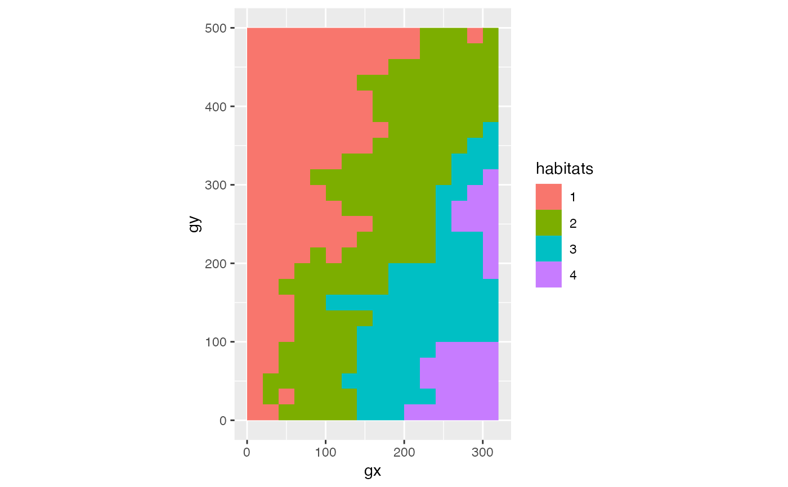

Plot habitats.
# S3 method for fgeo_habitat
autoplot(object, ...)An object of class "fgeo_habitat" (see fgeo_habitat at
https://forestgeo.github.io/fgeo/articles/siteonly/reference.html).
Not used (included for compatibility across methods).
An object of class "ggplot".
Other plot functions:
autoplot.sp_elev(),
autoplot_by_species.sp_elev(),
elev(),
plot_dbh_bubbles_by_quadrat(),
plot_tag_status_by_subquadrat(),
sp_elev(),
sp()
Other autoplots:
autoplot.sp_elev(),
elev(),
sp_elev(),
sp()
assert_is_installed("fgeo.x")
habitats <- fgeo.x::habitat
autoplot(habitats)
